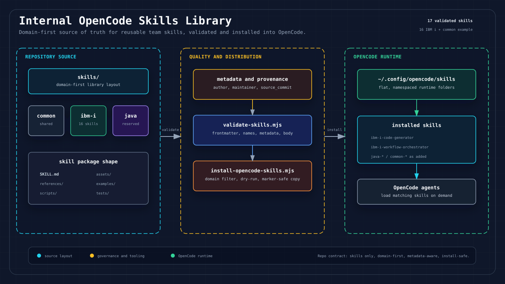

Start here to install shared skills, choose the right skill for your artifact, and route work through the IBM i delivery or Legacy Spec Factory modernization chains.
Open this page directly from the repository with
open docs/index.html. Avoid opening Markdown links from VS
Code Preview in Chrome; those links can become editor-internal
file+.vscode-resource... URLs.

node scripts/install-opencode-skills.mjs --dry-run
node scripts/install-opencode-skills.mjs
node /path/to/Skill-Library/scripts/install-opencode-skills.mjs --project /path/to/target-repo
Copy each skill folder into ~/.config/opencode/skills/<skill-name>/
or <target-repo>/.opencode/skills/<skill-name>/.
The destination folder name must match the name field in
SKILL.md.
~/.config/opencode/skills if it does not exist.SKILL.md.README.md.skills/ibm-i-skill-family/ibm-i-code-generator/ -> ~/.config/opencode/skills/ibm-i-code-generator/
skills/legacy-spec-factory/legacy-spec-writer/ -> ~/.config/opencode/skills/legacy-spec-writer/
The editable Markdown source for the longer manual-copy guide is
docs/manual-copy-opencode.md.
| You Have | Start With | Use When |
|---|---|---|
| Unclear requirement, ticket, email, or notes | ibm-i-requirement-normalizer |
Normalize messy input into a structured requirement package. |
| IBM i delivery work and you are not sure what comes next | ibm-i-workflow-orchestrator |
Route forward delivery from requirement through specs, code, review, and tests. |
| Existing RPGLE/CLLE source plus a change request | ibm-i-impact-analyzer |
Identify impact, risk, touched objects, and handoff needs. |
| Raw IBM i / AS400 source, DDS, logs, screens, reports, or SME notes | legacy-modernization-orchestrator |
Find the right reverse-modernization stage and next skill. |
| Approved legacy evidence bundle | legacy-ibmi-inventory |
Create the first inventory and object map for reverse engineering. |
| Approved reverse-engineering analysis needing a source-of-truth spec | legacy-spec-writer |
Produce evidence-backed spec.yaml, spec.md, and traceability. |
Use this family when you already have a requirement, change request, spec, or implementation task and need to move forward through IBM i delivery.
Source map: skills/ibm-i-skill-family/README.md
Use this family when you need to understand an existing legacy system and turn source/runtime evidence into reviewable specs.
Source map: skills/legacy-spec-factory/README.md
Use ibm-i-workflow-orchestrator.
I have this requirement/change request and need help choosing the next skill.Use legacy-modernization-orchestrator.
I have IBM i / AS400 source, DDS, job logs, or SME notes and need to understand the system.